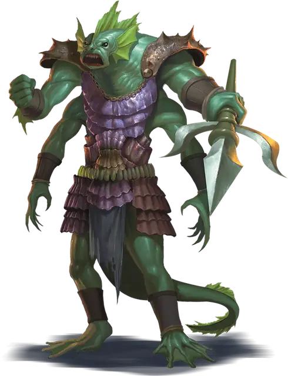

Барон сахуагинов
Sahuagin Baron
Большое Исчадие, Принципиальное Злое

Класс Защиты 16 Инициатива +5 (15)
Хиты 76 (9к10 + 27)
Скорость 30 футов, Плавания 50 футов
| мод | спас | ||
|---|---|---|---|
| СИЛ | 19 | +4 | +4 |
| ЛОВ | 15 | +2 | +5 |
| ТЕЛ | 16 | +3 | +6 |
| мод | спас | ||
|---|---|---|---|
| ИНТ | 14 | +2 | +2 |
| МДР | 13 | +1 | +4 |
| ХАР | 17 | +3 | +3 |
Сопротивление урону Кислота, Холод
Чувства Тёмное зрение 120 футов, пассивное Восприятие 17
Языки Сахуагинский
Опасность 5 (1 800 опыта; БВ +3)
Особенности
Кровавое бешенство. Сахуагин совершает с Преимуществом броски атаки против существ с неполными Хитами.
Наполовину амфибия. Сахуагин может дышать как воздухом, так и под водой, но должен погружаться в воду хотя бы один раз каждые 4 часа, чтобы не задыхаться.
Акулья телепатия. Сахуагин может магическим образом управлять акулами в пределах 120 футов от себя посредством особой телепатической связи.
Действия
Мультиатака. Сахуагин совершает три атаки Трезубцем.
Трезубец. Бросок рукопашной или дальнобойной атаки: +7, досягаемость 5 фт. или дистанция 20/60 фт. Попадание: 13 (2к8 + 4) Колющего урона.
Реакции
Кровь исчадия. Условие: Сахуагин получает Колющий или Рубящий урон. Эффект — Спасбросок Телосложения: Сл 14, каждое существо по выбору сахуагина в 5-футовой Эманации, исходящей от него. Провал: 10 (3к6) урона Кислотой, и цель проклята до завершения Короткого или Долгого отдыха. Пока цель проклята, она не может получать преимущества от состояния Невидимый, её Скорость снижается на 10 футов, а все Исчадия в пределах 120 футов от цели могу ощущать её местоположение независимо от преград.
Бонус мастерства +3
Среда обитания Прибрежье, Под водой
Сокровища Любые
Сахуагины
Разорители, выходящие с приливом
Сахуагины — это исчадия-хищники, что охотятся на существ как над водой, так и под ней. Жители прибрежных поселений называют их «морскими дьяволами», и не зря: они — безжалостные налётчики. Они грабят корабли, рыбацкие деревни и подводные поселения, утоляя свою кровожадность, захватывая сокровища и принося жертвы своему жестокому божеству — акулоподобному богу Секоле.
Сахуагины постоянно воюют со всеми, кто обитает близ их владений. Мерфолки и прочие водные народы принимают на себя основной удар, но сахуагины охотятся и на дышащих воздухом существ, что проплывают над их водами или погружаются в них. Часто сахуагины нападают вместе с акулами, которыми управляют телепатией.
Во времена великих конфликтов Секола наделяет особо безжалостных сахуагинов воинов гигантскими габаритами и ещё одной парой рук, превращая их в баронов сахуагинов. Эти дары возвышают получивших их над сородичами, делая их вождями и предводителями. Кровь баронов сахуагинов пропитана нечестивой магией, способной обжигать врагов и делать их неотразимой мишенью для прочих Исчадий.